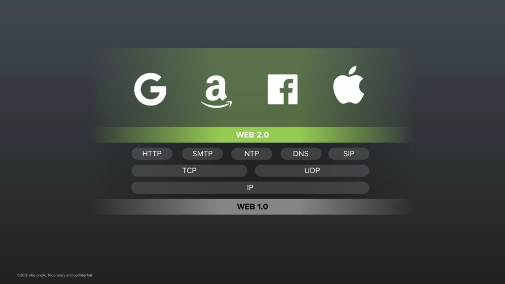
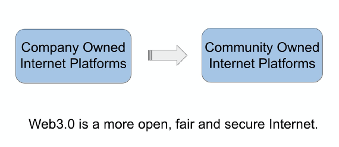

对Web3.0概念的梳理
前言
随着Bitcoin的天启事件（参见：《比特币白皮书》），近年来技术领域涌现出一大批新名词。这些名词的意义以及它们之间的关联，别说普通人不容易理解，就连混迹业界多年的资深人士也很难分得清。因为这些概念已经不再局限在纯技术领域了，它们是多学科交叉的前沿领域。
这些概念包括，但不仅限于如下：

一个新手面对这么多的概念，会不知所措。这时，他们往往会选择某一个术语所代表的方向研究下去，这是完全没问题的。但对整体性的把握也非常重要，有关这些综述性的资料，在目前的互联网中，要么就是一些飘渺的宏大乌托邦叙述，要么就是一些概念的简单陈列讲解。对这些概念成系统的成逻辑的梳理，还非常缺乏。
限于篇幅，本文不可能对这些概念一一讲解。本文的主要目标是尝试在这成堆的概念中，寻找出有关Web3.0的主要脉络。
对Web3.0的畅想
许多人对Web3.0有各种畅想，这些畅想的内涵可谓是千差万别。《刘毅：Web3.0到底是醒世恒言还是危言耸听？》中对Web3.0思想史的一个简要摘述如下：
什么是Web3.0？互联网当前处于Web2.0阶段，Web3.0是对下一代互联网的设计和设想。15年前，Web的发明人Tim Bernard-Lee爵士认为，目前互联网的局限在于，HTML是给人看的，没有元数据，不能被机器所理解。因此应该把数据赋予含义，开发出更智能、自动化程度更高的互联网应用，从而实现Web3.0，即语义网（Semantic Web）。但是大约在5年前，Lee爵士对下一代互联网的看法发生了变化，他发起了互联网大宪章运动，呼吁用户和从业者对互联网的未来进行广泛地讨论。
以太坊联创和Polkadot创始人Gavin Wood博士在2014年提出了一种革命性的Web3.0设想，并随后发起成了Web3基金会。他的理念是：Web3是为让互联网更去中心化、可验证、安全而发起的一组广泛的运动和协议；Web3愿景是实现无服务器、去中心化的互联网，即用户掌握自己身份、数据和命运的互联网；Web3将启动新全球数字经济系统，创造新业务模式和新市场，打破平台垄断，推动广泛的、自下而上的创新。
两位大师在不同的方向上进行着尝试。
Tim Bernard-Lee亲自发起了Solid项目 ，旨在让用户能控制他们在 Web 上产生的数据和内容，能选择数据如何被使用。Solid 的核心是个人数据存储系统 Solid POD，你在网上产生的所有数据都储存在 Solid POD 中，如你的联系人，你的照片和评论， 用户可选择将 Solid POD 储存在自己家中的计算机上，或挑选的网上 Solid POD 供应商（比如 Berners-Lee 创办的 Inrupt），你的所有数据都控制在自己手中，可以自由的添加或删除数据，授予权限给他人或应用来读取或写入部分 Solid POD 数据，不需要同步，因为你的数据一直伴随着你。这个平台需要开发者支持才能真正产生效果，很难想象中心化的平台会支持这个无法控制数据的去中心化平台。
Gavin Wood创办了Polkadot项目，旨在通过提供开箱即用的共享安全性保证和可互操作的多链网络架构，为用于承载Web3.0使命的各种parachain项目创建一个创新的平台。Gavin博士把Polkadot定义成为一个layer0的项目，即平台的平台 (The platform of platforms)。以此平台为根，期待绽放新时代的无穷分支没有边界的应用网络，从而逐渐侵蚀和替代现有的Web2.0互联网。
当然，业界还存在更多其它的有价值的观点，并在不同的方向上进行着尝试。
面对这些看似都很有道理的前沿的庞杂的甚至是相互冲突的思想，我们如何进行有效地梳理呢？
Web1.0和Web2.0
让我们回到互联网1.0的时代去看看能否发现一些有价值的东西。（以下这部分翻译自 a16z 的文章《Web 3.0 and the Future of Trust》by Ali Yahya 中的互联网演化这部分，有删节修改）

互联网早期的那一批协议其实相当美妙，TCP, IP, SMTP 和 HTTP，我们叫它 Web1.0 协议，它们是在70年代到80年代设计的，秉承的是开放性和包容性的精神，它们是开放的标准。这意味着在世界上任何地方任何人，能够站在平等的位置，在它们之上构建系统，而不需要经过任何人的准许。比如，现在已经存在几百个这些协议的开源的实现了。目前，在你手机中的那些协议的代码，不管它是iPhone还是Android手机，都直接依赖于这些开源的代码。
不知你有没有感受到，互联网对人类来说其实是一件特别伟大的事情，一个奇迹。现在的全球互联网是一个大的整体，而不是大量的不相交的独立的网络。世界上二百多个国家，千万计的公司——它们甚至有利益冲突——竟然神奇般地聚集和运行在这些同样的协议上，并在此之上互相连接，没有任何例外。
在这样一个常年分化的世界中，这是不寻常的，我们如何来解释这种现象呢？它其实就是开源的结果。因为互联网的核心协议是开源的，没人能单方面地控制互联网。它们的出现和支持是至下而上的且基本中立的。正是由于这些底层协议的稳定，在其之上才构建了现今的互联网生态。

这些协议的出现引导了一个创新的黄金时代的来临。在其之上，企业主和它们的投资人相信游戏的规则是中立和公平的。但是，开源很难营利！所以这些创业公司的商业模式是在这些互联网的开放协议上构建带产权的闭源的协议。这些协议就是Web2.0协议。

这其中少数创业公司已经变成了人类历史上最有价值的公司，你肯定听过其中一些。然后，也因为这些公司，数十亿人几乎免费地用上了伟大的新科技。这是一个现象级的事情。直到最近，这些公司都没有为此获得足够的名声（针对让数十亿人几乎免费地用上了伟大的新科技这一件事情）。
但是，一个严重的警告也随之而来，Web2.0的这些科技巨头已经变成大中介和互联网的守门人了。今天我们在互联网上做的大部分的事情，比如搜索网络、与人们联系、分享内容，都被迫依赖由这些公司开发的带产权的不透明的服务代码，不然就无法去做那些事情。
于是，这些公司就对他们的用户和第三方开发者，掌握了巨大的权力。凭借他们对所有数据的控制，它们控制了：平台上用户间的每个交互，每个用户无缝退出和切换到其它平台的能力，内容创作者被发现和发布内容的潜力，所有资本的流动，及第三方开发者和他们的用户间的所有关系。
他们还控制了游戏规则。在任何时候，没有警告，几乎完全按照他们的条款，这些公司可以改变在他们平台上允许发生的任何事情——经常在运行过程中剥夺整个第三方公司或用户的所有权力。这些公司已经成长为巨型怪兽。
互联网的故事，就变成了：基于中立和开放，就有了价值创造的可能性。而当太多权力掌握在少数营利性人类机构手中时，就会抑制创新，进入一个令人警惕的状态。
试想一下，在Web1.0的协议之上，孕育了Google这样的巨头。而在Google这样的Web2.0协议之上，还能孕育出一个新的类似的巨头吗？这是不可想象的事情（想象不出来如何做到）。Google已经成为互联网的守门人，它是不会让你在它之上再去做守门人的事情的。也就是说，Web2.0已经是科技树的一片叶子，已经到头。
于是我们要回去最初的状态去思考，不基于这些守门人的服务去思考，而是基于开放的Web1.0去思考：我们如何从“Don’ be evil“（Google已经放弃）去到 “Can’t be evil”。从不去做恶，进化到无法做恶。
对协议的进一步分析
Web1.0的开放协议让今天的互联网变得可能。但是，对于真实世界的软件平台服务来说，它们并不是一套完整的乐高积木。还有很多部分的协议缺失了，比如数据的存储协议，基于数据的计算协议等。
而Web2.0的科技巨头更进一步，提供了这些缺失协议的闭源版本，从而建立起了强大的商业模式（这是它们出现的本质原因）。
Web2.0有如下一些特点
- 平台经济。平台最终必然走向垄断
- 隐私换服务
- 数据归平台方所有。对数据的任何挖掘、加工等产生的利润，归平台方所有
- 依赖于平台而生存的某些职业，在平台的利益分配上，没有定价权
简单地说，Web2.0让平台成为最有钱有势的一方，所有人都在给平台打工。这种平台模式，不大可能从内部突破。这里面更详细的分析，请见：《刘毅：Web3.0到底是醒世恒言还是危言耸听？》。
Web2.0，数据完全由企业掌控，会有如下问题
- 数据易泄漏。外界的攻击，导致数据易被盗取。特别是很多企业内部数据用明文存储，一旦被盗，所有信息相当于完全公开
- 数据易丢失。企业运维的事故性丢失，或黑客的攻击性丢失，或企业倒闭服务关停导致的数据丢失等等
- 数据可被篡改。企业对其内部的数据库，有至高无上的权利，理论上来说，可修改任何数据（比如删除做恶的记录），即使是用的所谓纯增量数据库也是如此
- 数据会被审查。审查这个东西争议很大，虽然在某些方面有积极的意义，但是在另一方面负面作用非常大
- 数据会被打包售卖。这其实是一个灰色的商业模式，此不赘述
- 数据孤岛。同一行业下竞争企业数据孤岛现象特别严重，数据的相互交互特别困难
数据有这么多潜在的问题，核心原因就是数据被视为企业最核心的资产，数据及数据的使用规则，完全由企业来掌控。普通用户完全没有权力参与其中。
从Web3.0的角度来看，如果数据依赖于人或机构，必定会出现上述现象。而如果数据本身依托于开放的协议以及数学算法，那么是有可能解决上述那些问题的。
业界一些大师最近几年提出了一些观点，比如
- A16z的Chris Dixon提出”重启互联网”（参见：《Rebooting the Internet》）
- Gavin Wood说：“今天的互联网在设计上就是坏掉的。“ （参见：《Why We Need Web 3.0》）
我们需要的是一套开放的协议——就像Web1.0那样。
比特币的启发
如何做？比特币给了我们一些启发。
比特币背后的思想很有意思，它用密码学的一些基础设施比如数字签名，Web1.0的开放协议（TCP，UDP等），和一个非常聪明的激励结构来构建了一个集体所有的中立的数据库，或者叫分布式账本，用于记录比特币的交易/支付数据。
这个数据库的创新点在于，它的安全性是由它的用户至下而上建立的，而这个用户可以是任何人，在任何地点，在没有任何人允许的情况下参与进来。换句话说，对数据库的控制本身是分布式的，没有守门人。当然，它的挑战在于，许多参与者是不诚实的，如果可能，他们会想在这个系统中钻空子以获利。比特币的天才之处在于它的激励结构，它让系统可以自我监管（self-policing）。它不把唯一的一份数据库放在一个“可信赖“的数据中心（这个数据中心可能是被Google这种大公司拥有），而是在网络上每个参与者都持有一份他们自己的拷贝。
这会产生了一个问题：我们如何确保数据库的所有拷贝是始终保持一致，以保证没人能插入一个做假的交易数据呢？
答案是网络中的每个参与者（被称为矿工）监视着网络，并且给他们认为有效的交易集合投票。关键之处在于他们用他们算力进行投票。比如Alice是一个矿工，她给网络贡献的算力越大，她就帮助网络有更多的安全性。作为结果，协议给她更多的投票权力和更大的奖励。
重要的是，付给Alice的奖励是新挖出的比特币。所以比特币一口气做了两件事情，做为一种货币而存在，同时又成为引导自身安全性的资金来源。
这种思想被称为工作量证明（PoW）。内在逻辑是你必须给这个数据库贡献安全性以获得投票和回报。结果是形成了一种优雅的激励结构，该结构鼓励网络中的参与者相互检查。因此，即使他们彼此不信任，他们也会信任他们一直共同保护的这个数据库（分布式账本）。
比特币是最简单的加密网络。它试图处理去信任货币的问题——货币的正统性和背书不依赖于人类机构，而是依赖于数学上的保证。
这就是比特币背后的思想，伟大！当然，从这种模式出发不能直接推出Web3.0的具体形式，但会给我们巨大的启发。比特币给我们展示了一个可靠的无许可分布式系统是能够在现实世界中稳定持久运行的。人们有理由相信沿着这个思路发展下去，一个新的世界正在等待着我们。现在全世界最聪明的头脑们正在沿着这个方向积极探索（同时也伴随着巨大的投资热潮和泡沫）。
Web3.0的特点
业界对Web3.0的定义花样百出，莫衷一是，几乎把所有对未来的美好理想都强加到Web3.0之上，这是不可取的。
我们对Web3.0的特点进行了一些归纳：
- Web3.0必须是开放的
- Web3.0必须是安全的。因为开放，且安全，所以必须用到密码学技术
- Web3.0必定是去中心化的或者叫分布式的。开放协议，必定造就去中心化
- Web3.0的平台和应用必定具有原生通证，因为去中心化需要通过通证自动结算各方的利益分配
Web3.0会在生产关系上产生巨大的突破。
对服务的提供方来说：
- 平台的代码（协议）是开放的
- 不是一家企业独自掌控平台，而是一个社区拥有这个平台
- 平台的利润，不再是不透明的，不可预测的，优先流向大股东的（大股东可能为追求更高的巨额利润来对平台的策略进行修改）。而是按规则的，可计算的，可预测地分配给所有平台中价值的创造者
- 平台的商业模式仍然能容纳Web2.0的成熟的商业模式，比如广告、会员服务、游戏等
- 平台可能催生新的商业模式
- 平台不会像Web2.0一样，因为其主体公司的倒闭而关闭，一个参与节点的关闭不影响Web3.0平台整体的运行
对用户来说：
- App的使用体验与Web2.0仍然类似或一致
- 用户对自己贡献的内容具有所有权，能够根据对平台的内容贡献获得一定的回报
- 对自己使用平台服务时产生的隐私数据，能够比较清楚的知晓这些数据的边界和用途，并对这些数据具有一定的决策权，可用其产生一定的经济收益
- 对平台承诺的对一些私密数据的存储有信心（因为是密码学保证且代码是开源的）
- 用户能跨平台地拥有一些东西的所有权（这个所有权是密码学保证的，不是某个机构认证的），这样在跨平台交互的时候，能认证且自由转移这些所有权资产
我们整理Web1.0, Web2.0, Web3.0的历史关系，做图如下：

Web3.0不是Web2.0的直系后代，而更像是远房表亲。Web3.0的核心思想更多来自Web1.0的开放协议簇和密码学领域的混合。Web3.0平台的运营商业模式和用户使用体验与Web2.0没有太大区别。Web3.0是开放的协议簇，基于Web3.0将会产生更丰富多样的创新的商业模式。
Web3.0不一定能在所有领域对Web2.0产生全面的替代，但一定会在某些领域，特别是具有明显网络效应的领域产生突破。比如：社交媒体、UGC内容平台（博客，问答等）、原创内容（如音乐，艺术，书籍等）分发平台等领域。
结语
我们用一张图来总结Web3.0的核心要素：

图片来自《Web3.0应用的新机遇》
Web3.0是一个更加开放，公平和安全的网络，其网络形态不是当前Web2.0的简单升级，它要解决的核心问题，其实是平台利益的分配问题。Web3.0要在激励人的主观能动性和价值创造的基础上尝试解决利益分配问题。而利益的分配，又与组织形式密切相关。这正是区块链能发挥作用的地方，这些细节具体会在下一篇《为什么Web3.0需要区块链》中详细讲解。
Web3.0不是在一块空白之地上建立空中楼阁，它致力于解决人类社会发展中的深层次问题。
引用
- 比特币白皮书 https://bitcoin.org/bitcoin.pdf
- Web 3.0 and the Future of Trust https://a16z.com/2019/11/12/the-end-of-centralization-and-the-future-of-trust/
- Rebooting the Internet https://medium.com/dfinity/rebooting-the-internet-andreessen-horowitzs-chris-dixon-on-the-decentralized-web-e0b4b0245645
- Why We Need Web 3.0 https://gavofyork.medium.com/why-we-need-web-3-0-5da4f2bf95ab
- 《刘毅：Web3.0到底是醒世恒言还是危言耸听？》 https://mp.weixin.qq.com/s?src=11×tamp=1618666137&ver=3014&signature=gvJ5zET-uhEK6GCJGTPMG70iAollqC4oToIB1aXZrOq6drLiThxPVXc1feP84JpcNKnovNPIc2umIuPPHuwzef7mKrD*sUhGCcH89SG2aUT5-9lp4nNxJ86S9HxLUQ&new=1
- 《Web3.0应用的新机遇》 https://mp.weixin.qq.com/s/DxHSRASawmwU_snbsKXKdw